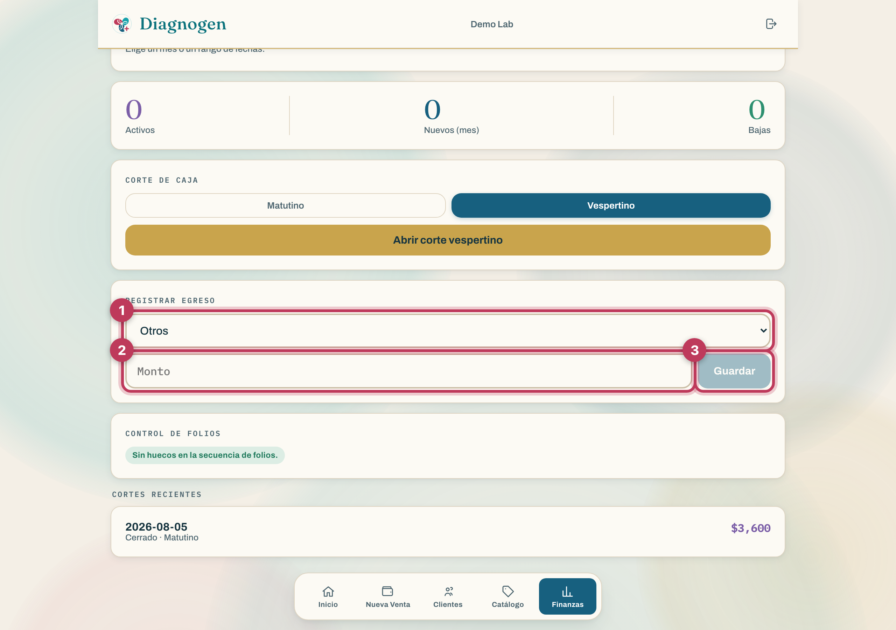
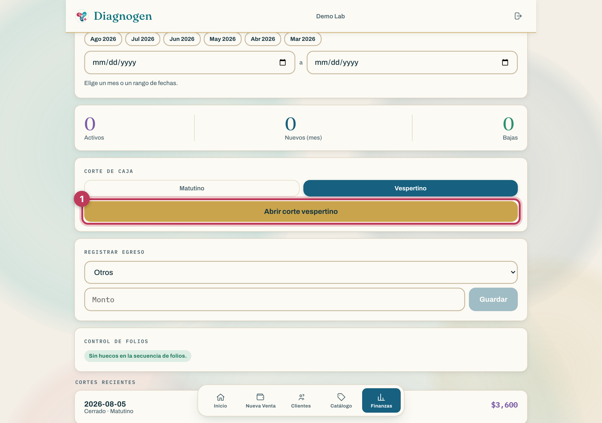
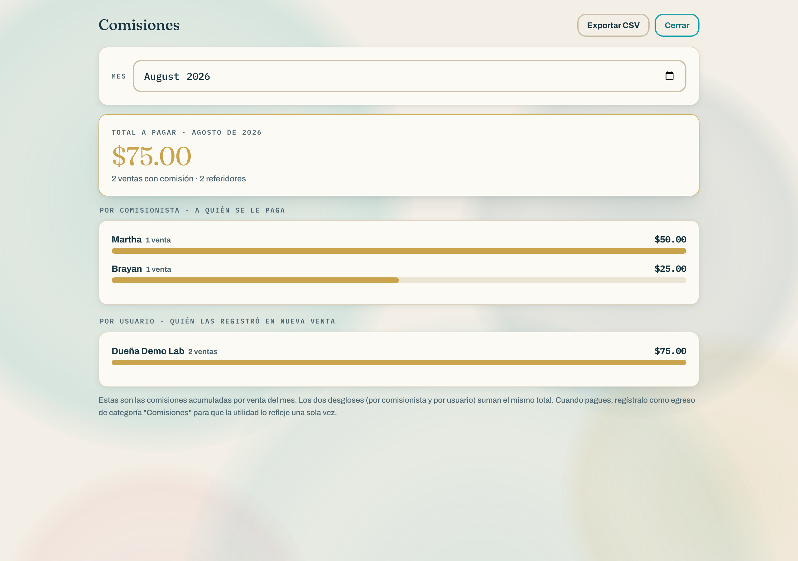
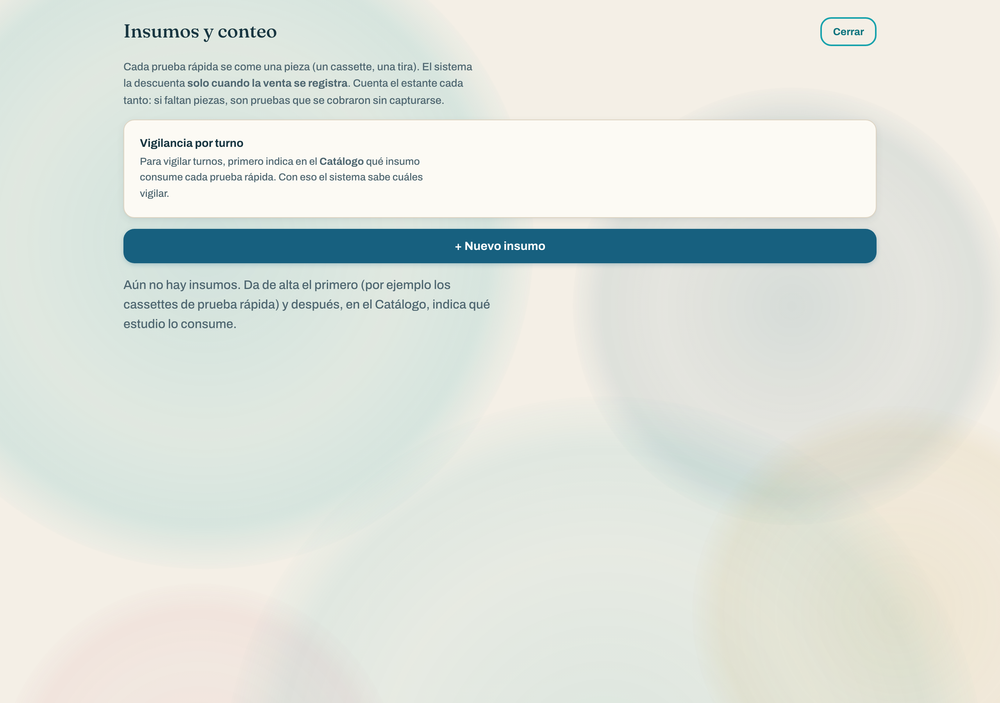
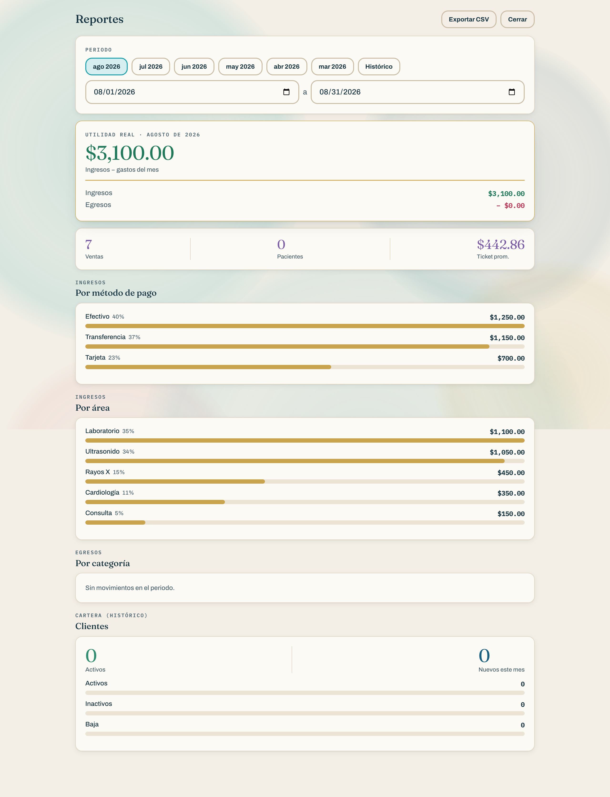
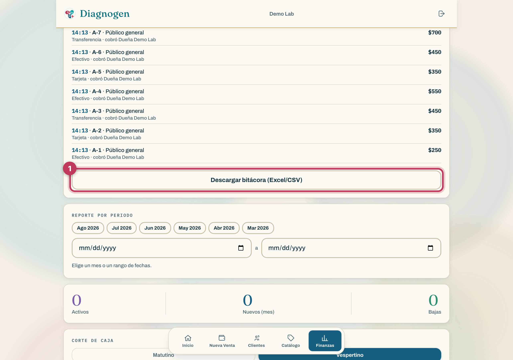

Todo lo que sale de la caja: nómina, renta, maquila, insumos, comisiones y los gastitos del día. Con pantallas reales y el punto exacto dónde picar 🔴
Todo peso que sale de la caja se registra en el momento, con su categoría.
No importa si son $30 de garrafón o $18,000 de nómina: si sale dinero, se captura. Esa es la única forma de que a fin de mes la utilidad sea la de verdad y no un aproximado.
Abajo, en la pestaña Finanzas, busca el bloque REGISTRAR EGRESO:
Elige la categoría de la lista (las 8 están explicadas en el punto 3).
Escribe el monto. Solo números — sin el signo de pesos.
Toca Guardar. Listo, el gasto ya está en el sistema y en el corte.

| Categoría | Qué va aquí | Ejemplos reales |
|---|---|---|
| Nómina | Sueldos y honorarios del personal | Quincena de la recepcionista, pago al químico, honorarios de la doctora |
| Renta | Renta del local | Renta mensual del consultorio |
| Insumos | Material de trabajo que se consume | Agujas, tubos, reactivos, cassettes, guantes, papelería clínica, gel de ultrasonido |
| Maquila | Estudios que manda a otro laboratorio | Pago a Monzón, Precisso, Gleculab por estudios subrogados |
| Comisiones | Pago a quien refirió pacientes | Comisión al médico o promotor que mandó al paciente |
| Servicios | Lo que mantiene el local funcionando | Luz, agua, internet, teléfono, mantenimiento del equipo, limpieza |
| Devoluciones | Dinero que se le regresa a un paciente | Reembolso por estudio cancelado o cobrado de más |
| Otros | Los "gastitos" que no caben arriba | Garrafón, café, taxi para llevar muestras, propina de mensajería, papelería de oficina |
Al abrir: en Finanzas, toca Abrir corte (matutino o vespertino, según el turno).
Durante el día: cada gasto que salga, se registra en el momento.
Al cerrar: toca Cerrar corte. El sistema cuadra lo cobrado por método de pago menos los gastos del turno y te da el saldo.

La nómina es normalmente el gasto más grande del mes, así que vale la pena capturarla con orden:
Un registro por pago, el día que se paga. Si pagas quincenas, son dos registros al mes; si pagas semanal, cuatro o cinco.
Categoría siempre "Nómina" — también para los honorarios de la doctora o de quien factura por servicios profesionales.
Un registro por persona si quieres poder revisar después cuánto se llevó cada quien; o uno global por quincena si prefieres rapidez. Lo importante es ser consistente todo el año.
Cuando mandas un estudio a otro laboratorio (Monzón, Precisso, Gleculab…), tú cobras al paciente el precio completo y luego le pagas al laboratorio su parte. Ese pago va en Maquila.
Registrarlo aparte permite ver lo importante: cuánto te queda realmente de los estudios que no haces tú. Si un estudio se cobra en $400 y la maquila cuesta $260, tu margen real es $140 — y eso solo se ve si la maquila está en su propia categoría.
Las comisiones tienen su propio módulo, porque se asignan en el momento de la venta (en la caja, con el interruptor "¿Hay pago de comisión?"), y así el sistema sabe exactamente qué venta generó qué comisión.

En la caja, al cobrar, se elige al comisionista y su monto (se precarga el que tiene configurado, pero se puede cambiar para esa venta).
En Inicio → Comisiones ves el acumulado por persona y el periodo.
Cuando le pagas al comisionista, ahí sí registras el egreso en la categoría Comisiones por el monto entregado.
Los insumos tienen doble vida: son un gasto (cuando los compras) y son un control anti-fugas (cuando los cuentas).
Al comprar: registras el egreso en la categoría Insumos.
Al contar: en Inicio → Insumos y conteo capturas cuántas piezas hay en el estante. El sistema descuenta una pieza por cada venta registrada, así que te dice si faltan.

En Inicio → Reportes está el reporte del mes con las mismas columnas siempre:

Ahí ves el total de egresos y su desglose por cada una de las 8 categorías, y puedes descargarlo a Excel para el contador.
Dos controles que viven en Finanzas y sirven para revisar que nada se escape:
Cada transacción con su hora exacta, quién la cobró y por qué método. Incluye las canceladas (con quién y a qué hora las canceló) y las de práctica, marcadas. Se descarga a Excel.

Cada venta lleva un folio consecutivo (A-1, A-2, A-3…). Si falta un número en la secuencia, el sistema lo marca en rojo: significa que una venta se registró y luego se borró fuera del flujo normal. En verde, tranquilidad.
Revisa la bitácora del mes completo y descárgala.
Checa el control de folios: que esté en verde.
Captura lo que falte: renta, servicios, maquila del mes, comisiones pagadas.
Haz el conteo de insumos y aclara faltantes.
Abre el reporte de utilidad, descárgalo a Excel y mándaselo al contador.
Compara contra el mes pasado: ¿qué categoría creció? Ahí está la conversación del mes.
| Error | Qué provoca | Cómo evitarlo |
|---|---|---|
| Anotar gastos en la libreta y capturarlos "luego" | Se olvidan; el mes sale más rentable de lo real | Capturar al momento de pagar |
| Meter todo en "Otros" | El reporte no dice nada útil | Escoger la categoría real; "Otros" solo para lo que de verdad no encaja |
| Registrar la comisión dos veces (en la venta y como egreso el mismo día) | Los gastos se inflan | El egreso se captura solo cuando le pagas al comisionista |
| Meter la maquila en Insumos | Se pierde de vista el margen real de los estudios subrogados | Maquila = laboratorio externo; Insumos = material que se consume |
| Cerrar el turno sin capturar los gastos del turno | El corte no cuadra con el efectivo del cajón | Capturar antes de cerrar corte |
| Pagar de la caja chica y no registrarlo | Falta efectivo sin explicación | La caja chica también es dinero del negocio: se registra |
| Situación | Qué hacer |
|---|---|
| Me equivoqué de categoría | Registra el gasto correcto y avísale a dirección para que lo tome en cuenta al revisar el mes. Los gastos no se borran: queda el rastro. |
| Puse un monto equivocado | Avisa a dirección de inmediato — mientras más rápido, más fácil de aclarar contra el corte del día. |
| Pagué un gasto con mi dinero | Regístralo igual (es gasto del negocio) y anota aparte que se te debe reponer. |
| Es un gasto de dos categorías (ej. una compra con insumos y papelería) | Si la mayor parte es de una, ponla completa ahí. Si son montos parecidos, captura dos egresos separados. |
| Compré algo grande (un equipo) | Regístralo en Otros y coméntalo con el contador: una inversión en equipo se trata distinto a un gasto del mes. |
| Le devolví dinero a un paciente | Categoría Devoluciones, por el monto devuelto. |
| No sé si ya lo capturé | Revisa el corte del día o la bitácora. Es mejor verificar que registrar doble. |
Diagnogen POS · Manual de gastos · Las pantallas son de la app real (datos de demostración).
¿Buscabas el manual de uso general? Está en manual de uso.